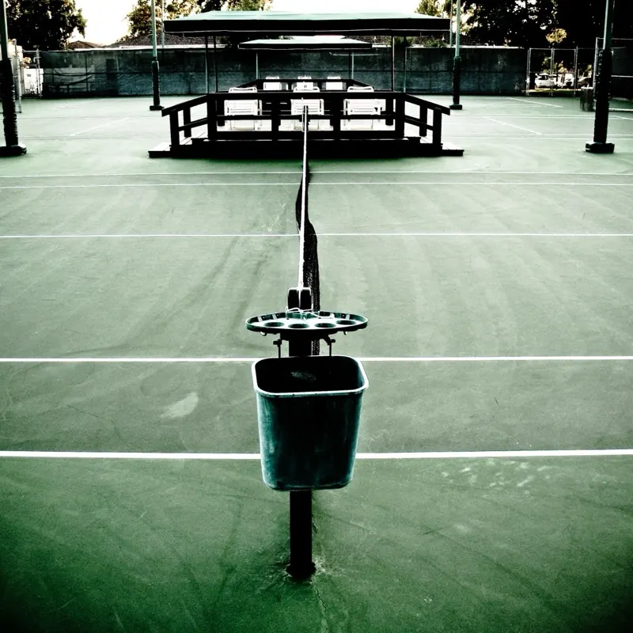

42 people, logged day by day
Participants logged their own days through a custom mobile app for 28 to 44 days: wake-ups, meals, exercise, naps, bedtime, often with a photo and a mood note. Each released trajectory keeps those entries verbatim, wraps them in clue-planted synthetic events, and was confirmed by the participant.
Structural validator
Automatic. Every anchor payload must equal the original log entry, time buckets must match the day skeleton, event counts must match, and synthetic text may not contain a calendar date, weekday name or 12-hour clock time.
rule-basedFull-trajectory review
An internal reviewer reads the whole trajectory and flags mood inconsistencies, narrative jumps and anchor–synthetic mismatches. Flagged users go back through expansion and are validated again.
internal reviewerParticipant fidelity confirmation
The participant sees the assembled trajectory with their own entries highlighted and a random sample of synthetic events foregrounded, and says whether it still reads like a plausible stretch of their own life. No confirmation, no release.
the participant- USA75%
- Southeast Asia9%
- Europe5%
- China5%
- Other7%
- English51%
- Chinese40%
- Korean3%
- Other6%
- Deep night69%
- Late night22%
- Early morning7%
- Other2%
- Afternoon58%
- Morning24%
- Evening16%
- Other2%
- Hybrid62%
- Independent38%
- Health40%
- Stress relief33%
- Fitness19%
- Muscle gain7%
- Other2%
Three things every participant gave
Daily logs, a persona and a 100-question survey. Together they supply the evidence an agent reads and the labels it is scored against.
Daily logs
agentHelp flag, with a reason~5%Persona
Written by the participant. Stage 1 of the synthesis distils it, together with the survey, into a profile and a deliberately vague survey insight, released as profile_persona.json.
Implicit-preference survey
Seven lifestyle domains plus one cross-domain bucket whose questions span several of them. Four options per question, so random guessing scores 25%. The answers are never shown to the synthesizer as text.
Real anchors, clue-planted context
Self-tracking is sparse, so a four-stage pipeline fills each day around the participant's own entries. Two contracts hold throughout: anchors stay verbatim, and survey answers enter only as a distilled insight, so preferences show up as behaviour, never as restated answers.
Anchors stay verbatim
Every original entry is reproduced exactly: text, timing fields, photo, mood note and agentHelp flag. The model may only add a third-person paraphrase of what the participant did.
Survey answers never appear as text
The 100 answers reach the synthesizer only as a distilled, deliberately vague survey_insight. Preferences surface as behaviour: a late dinner, a re-ordered errand, a sigh after a meeting.
Image grounding
Photographs become action-focused captions written by a vision LLM.
Persona and survey insight
Persona and the 100 answers become a profile and one distilled survey insight.
survey_insight is the only conduit for survey content.Day skeleton and clue plan
Per-day theme, narrative arc, dominant mood, planned events and a clue plan.
Trajectory expansion
Five-day chunks become full anchor and synthetic events with long descriptions.
Rule-based check
Exact anchor equality, time-bucket consistency, event counts, privacy denylist.
Day N only.Synthetic clues carry signal
Keep every real anchor and remove every synthetic event: Implicit Preference accuracy falls for every model, by 2 to 11 points at Long Trajectory (C2) and by 3 to 6 points at Lifelong Memory (C4), and the stronger models lose the most.
Table
| Model | C2 anchor | C2 full | Δ C2 | C4 anchor | C4 full | Δ C4 |
|---|---|---|---|---|---|---|
| Gemini-3-Pro | 38.1 | 49.1 | −11.0 | 61.7 | 67.5 | −5.8 |
| Qwen3.6-27B | 38.6 | 49.1 | −10.5 | 60.1 | 65.5 | −5.4 |
| Gemini-2.5-Flash | 38.7 | 44.7 | −6.0 | 53.9 | 58.0 | −4.1 |
| Qwen3.5-9B | 30.8 | 32.8 | −2.0 | 46.9 | 50.0 | −3.1 |
Implicit Preference accuracy, %. anchor = anchor-only trajectory; Δ = anchor-only − full, in points.
Not tied to one generator
Re-synthesising 15 users with Qwen3.6-Plus instead of gpt-5-mini moves Lifelong Memory accuracy by at most 4.7 points, and the lines never cross: the five models rank the same in all three settings.
- 1Gemini-3-Pro−4.7
- 2Qwen3.6-27B−1.8
- 3Gemma-4-31B−1.8
- 4Claude-Sonnet-4.6−3.2
- 5GPT-5−4.4
Table
| Model | (a) 42 users gpt-5-mini | (b) 15 random users gpt-5-mini | (c) same 15 users Qwen3.6-Plus | (c) − (b) |
|---|---|---|---|---|
| Gemini-3-Pro | 67.5 | 68.8 | 64.1 | −4.7 |
| Qwen3.6-27B | 65.5 | 64.0 | 62.2 | −1.8 |
| Gemma-4-31B | 65.2 | 63.6 | 61.8 | −1.8 |
| Claude-Sonnet-4.6 | 63.1 | 63.0 | 59.8 | −3.2 |
| GPT-5 | 58.5 | 59.5 | 55.1 | −4.4 |
Lifelong Memory (C4) accuracy, %. (c) − (b) in points.
12 event subdomains, 8 lifestyle domains
Every event carries a fine-grained subdomain; every survey question carries a lifestyle domain. This many-to-one map is the only bridge between the two, and the seven lifestyle domains are the ablation targets of Cross-Domain Transfer.
Daily routine
Food & dining
Work & study
Leisure
Commuting & travel
Shopping

Social & wellbeing
Cross-domain
Questions that span several lifestyle domains. No subdomain of its own and not an ablation target.
The two views never differ by more than 1.1 points, so no domain is over- or under-described relative to how often it occurs, and all nine time buckets are populated within every domain.
Get the data and the code
One archive on Harvard Dataverse, one repository on GitHub, one command to lay the data out.
- jarvis-bench_full.zipone file
- jarvis-bench_full/
- User.zip
- User/<user>/42 participants, one folder each
- synthetic_trajectory.jsonthe trajectory
- profile_persona.jsonprofile + survey insight
- skeleton.jsonday skeleton + clue plan
- qa_report.jsonvalidator report
- skeleton_windows/ · chunks/ · run_logs/intermediate files
- Image.zip
- Image/<user>/Day<N>/<photo>photographs, by day
Dataset
Trajectories, personas, skeletons and photographs for the 42 participants.
Code
Evaluation code, prompts and the survey answer key, ground_truth/survey_ground_truth.json. One command lays the data out:
python tools/prepare_data.py /path/to/jarvis-bench_full.zipConsent and privacy
- Collected under a protocol approved by the IRB of the University of Illinois Chicago; every participant consented.
- Fully anonymous: no surnames, precise locations or calendar dates. Days are relative,
Day N, and synthetic events carry time buckets instead of clock times. - Photographs enter the trajectory text only as action-focused captions; the photographs themselves ship for the image variants of Proactive Help and Emotion-Aware Modeling.
- Every released trajectory was confirmed by its participant as a plausible stretch of their own life.